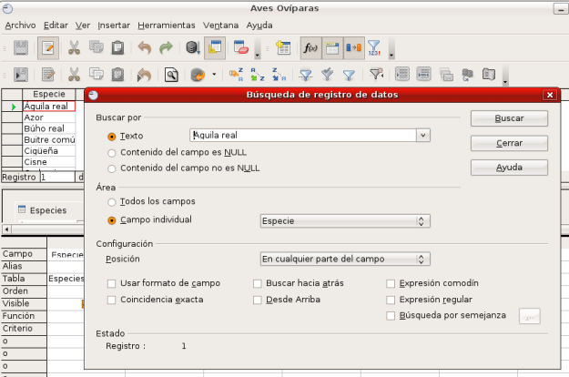

Dentro del resultado de una consulta, también podemos buscar y localizar
cualquier información. Para comprobarlo selecciona el botón Buscar registro de datos (el de la lupa) para mostrar el cuadro de diálogo que aparece en la siguiente figura.

En la primera sección tenemos tres posibilidades aunque la que usaremos
con más frecuencia será sin lugar a dudas la primera, donde debemos
introducir la palabra o término que deseamos buscar. Otras posibilidades
serán localizar registros que contengan valores NULL.
A continuación, en la
siguiente sección del cuadro de diálogo, debemos indicar si
la búsqueda deseamos localizarla en un campo concreto de la consulta o en
cualquiera de ellos.
Por último, dentro del apartado Configuración encontraremos diferentes opciones para concretar el ámbito de la búsqueda.
- Posición: Aquí podemos elegir la
situación exacta del campo donde se buscará el término que queremos
localizar: al principio o al final del campo, en cualquier parte del
mismo o en todo el campo. Esta última opción implica que la totalidad
del contenido del campo tiene que coincidir con el término de búsqueda.
- Usar formato de campo:
Una opción a tener muy en cuenta si necesitamos localizar valores
de fecha y hora en el resultado de la consulta. El motivo es que no
siempre coinciden los formatos de representación con la forma en que la
base de datos almacena esta información.
- Buscar hacia atrás: Comienza la búsqueda desde el último hasta el primer registro de la consulta, es decir, justo al revés.
- Coincidencia exacta:
A la hora de buscar, activa esta casilla de verificación si necesitamos
distinguir entre mayúsculas o minúsculas. Si no es así, no hará esta
distinción en el momento de la búsqueda.
- Desde el principio: Inicia el proceso de búsqueda desde el primer registro.
- Búsqueda por semejanza: Se trata de localizar términos semejantes al patrón de
búsqueda. Al activar esta casilla hay que hacer clic en el pequeño botón situado a
la derecha para mostrar otro cuadro de diálogo que tiene las siguientes opciones:
- Cambiar caracteres: Indica el número de
caracteres que puede cambiar el programa para identificar palabras
similares. Por ejemplo, si decidimos utilizar el valor 1 para esta
opción, “teja” y “toja” se considerarán palabras similares.
- Añadir caracteres:
En este caso, el programa podrá utilizar el número de caracteres extras
que indique aquí para encontrar términos semejantes. Por ejemplo, si el
término de búsqueda es “Panel”, la palabra “Paneles” se considerará
similar para la herramienta de búsqueda si decide añadir 2 caracteres.
- Eliminar caracteres:
Igual que ocurre con la opción anterior, pero esta vez eliminando
caracteres. Siguiendo con el mismo ejemplo, si buscas “Panel”, la
palabra “Pan” se considerará similar.
- Combinar:
Permite utilizar al mismo tiempo todas las opciones anteriores para
localizar términos semejantes según los valores introducidos en: Cambiar caracteres, Añadir caracteres y Eliminar caracteres.